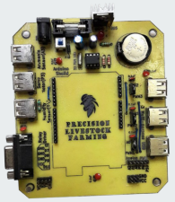
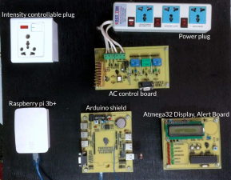
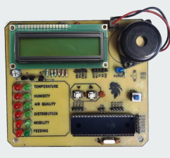
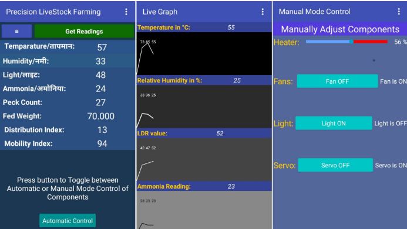

Precision Livestock Farming
Winner Project in Locus Event 2019, Under Hardware Thematic Category
2019
Poultry is one of the contributing areas for the growing problem
of antimicrobial resistance in Nepal. Broiler chickens are prone
to mass casualty and disease outbreaks with no significant
symptoms leading to huge economic loss for the farmers. Moreover,
they are made to grow fast, often times
unable to support their own weight causing leg disorders and
paralysis.
This project presents a novel method that monitors the mobility, distribution (using images from camera processed with trained YOLO and SORT algorithm) and feeding behaviour (using sound analysis) to estimate the welfare of the fowls while providing suitable habitat for growth (with environmental sensor and ac appliances). This results in increased profit for the farmers. We also found the broiler to prefer high temperatures and humidity, and good ventilation a must to curb the effects of methane and ammonia gases produced from the excreta of the chickens. Poultry is one of the contributing areas for the growing problem of antimicrobial resistance in Nepal. Our project can also help prevent outbreak of diseases and introduce timely intervention that can minimise unnecessary antibiotic administration.
This project presents a novel method that monitors the mobility, distribution (using images from camera processed with trained YOLO and SORT algorithm) and feeding behaviour (using sound analysis) to estimate the welfare of the fowls while providing suitable habitat for growth (with environmental sensor and ac appliances). This results in increased profit for the farmers. We also found the broiler to prefer high temperatures and humidity, and good ventilation a must to curb the effects of methane and ammonia gases produced from the excreta of the chickens. Poultry is one of the contributing areas for the growing problem of antimicrobial resistance in Nepal. Our project can also help prevent outbreak of diseases and introduce timely intervention that can minimise unnecessary antibiotic administration.
Tracking hens in order to see their distributution
Precision Livestock Farming (PLF) is data Data Collections & Data Analysis
project that uses various advanced
technologies to monitor and understand animal behaviour in
order to optimize their contribution to the livestock. Our
prototype monitors broiler chickens in the poultry using
camera, microphone and various environmental sensors to
examine the fowl behaviour (feeding, mobility, distribution,
etc) which has been correlated to the well being and sound
health of the broiler variety.
The user friendly mobile application has been developed to monitor the status of poultry farms and notifies the farmer in critical situations. The app has got the features to control hardware appliances such as heater, light, humidifier to maintain suitable environment for them.
Camera is used to track each chicken for their distribution and mobility index. Dense distribution implies ventilation failures, illumination changes and feeding problems and low mobility index reveals locomotive issues, lameness (paralysis) or leg disorders. Microphone is used to detect peck counts and quantitatively estimate feeding behaviour. Other sensors (temperature, humidity, air quality and light sensor) are used to maintain suitable habitat, assisted with heater, fan, light bulbs and other connected ac appliances.
The user friendly mobile application has been developed to monitor the status of poultry farms and notifies the farmer in critical situations. The app has got the features to control hardware appliances such as heater, light, humidifier to maintain suitable environment for them.
Camera is used to track each chicken for their distribution and mobility index. Dense distribution implies ventilation failures, illumination changes and feeding problems and low mobility index reveals locomotive issues, lameness (paralysis) or leg disorders. Microphone is used to detect peck counts and quantitatively estimate feeding behaviour. Other sensors (temperature, humidity, air quality and light sensor) are used to maintain suitable habitat, assisted with heater, fan, light bulbs and other connected ac appliances.



Project consisted of major dissections - Data fetch using
Sensors, Analysis and Control via Mobile Application.
My roles were solely in Mobile
Application, Server Setup in Raspberry Pi and Database
handling with few contributions to other sections.
Server Setup
Raspberry Pi has been used as interface to support bidirectional hardware and mobile app data flow. Sensors such as camera, microphones generate provides the data which is passed to Raspberry Pi and result is published to Arduino with UART, other hardware appliances connected. All these sensor data were able to stream near real time in mobile app through python Flask based server that acted as REST API server.
Raspberry Pi has been used as interface to support bidirectional hardware and mobile app data flow. Sensors such as camera, microphones generate provides the data which is passed to Raspberry Pi and result is published to Arduino with UART, other hardware appliances connected. All these sensor data were able to stream near real time in mobile app through python Flask based server that acted as REST API server.
Database Storage
Along with Flask backend server, database was setup in Raspberry Pi to store partial data required for transmission and to enable streaming of derived metrics.
Along with Flask backend server, database was setup in Raspberry Pi to store partial data required for transmission and to enable streaming of derived metrics.
Mobile App
MIT App Inventor was used for user friendly app that streamed near real time data display of sensors. App featured the alarm system incase of emergency situtation in farm. It consists of visual readings, graphs for farmers to observe along with control panel area to control the hardware appliances to manage the suitable environment for the poultry.
MIT App Inventor was used for user friendly app that streamed near real time data display of sensors. App featured the alarm system incase of emergency situtation in farm. It consists of visual readings, graphs for farmers to observe along with control panel area to control the hardware appliances to manage the suitable environment for the poultry.

Winning
The project was demonstrated in 16th Locus event,the
most reputed national level tech events, and chosen as Winner
of Hardware Thematic Category
Team Members


")